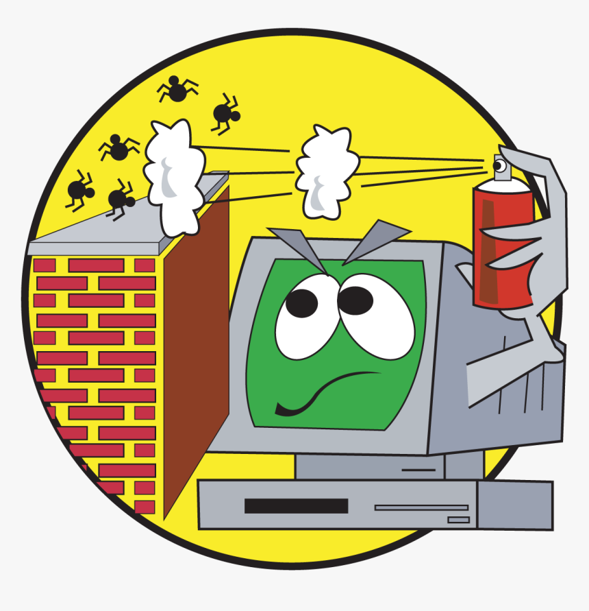
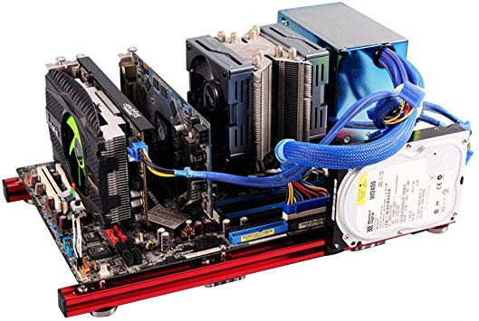

Software:
We offer several software based packages. This includes over the phone diagnostics and in-house trouble shooting. Pricing is determined based on the complexity of the problem (email us for more info on pricing). Problems can be as simple as trying to install with the wrong drivers or they can range to having an incompatibile hardware configuration so if you aren't sure, don't hesitate to get in contact!
Viruses:
With the rise of ransom-ware, we recommend keeping an external backup of all important data. Anti-malware software is your next step to keeping your data safe. If both of those measures still aren't enough, we offer a simple data recovery service with a clean install of your original OS. Unfortunately, when it comes to data recovery after a malware attack there aren't many options if your device isn't backed up or your hard drive is out of warranty.
Hardware:
Computer hardware can be a time consuming research process. We offer our enthusiam in this field to you. New processors, graphics cards, motherboards, etc. are released monthly so keeping up to date can be a daunting task. All we need from you is your requirements for a system. Our team offers parts lists, system builds, and diagnostics. Just get in contact and we'll have you working with a new computer faster than you can say Josh's Computer Shop.